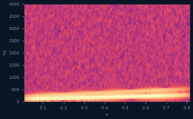
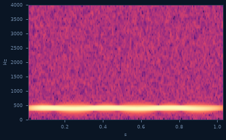
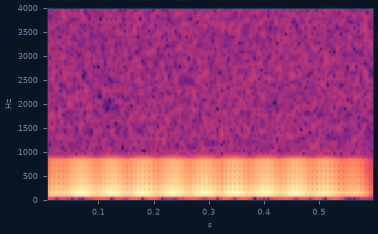
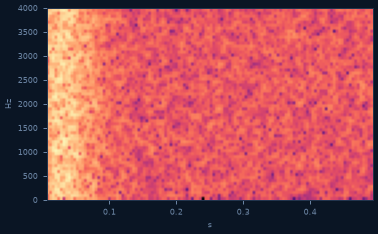
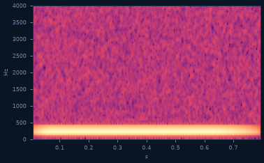

Bitácora de sonidos
Cinco sonidos elegidos del catálogo para conocer el repertorio de la ballena franca austral, con las descripciones apoyadas en la bibliografía clásica del área (Clark, 1982).
Así suena un up-call — el llamado de contacto
Un barrido grave que sube de tono en un segundo. Es el sonido más característico de la ballena franca austral: Clark (1982) lo describe como el llamado de contacto con el que una ballena anuncia dónde está y busca respuesta de otras.

El high call — un aviso más agudo
Un tono más alto y sostenido que el up-call. En el repertorio que Clark (1982) registró en Península Valdés aparece asociado a ballenas activas, muchas veces mezclado con otros llamados en secuencias de interacción.

El pulsive call — el gruñido áspero de los grupos
Un sonido pulsado, áspero, casi un gruñido bajo el agua. Clark (1982) lo asocia a los grupos socialmente activos: cuanto más revuelo hay en superficie, más de estos llamados se escuchan.

El gunshot — un estampido bajo el agua
Un estallido corto y de banda ancha, como un disparo amortiguado por el mar. Se le atribuye a la ballena franca un rol de señal — posiblemente de los machos — y es inconfundible en el espectrograma: una columna vertical que cruza todas las frecuencias.

Un sonido que todavía no tiene nombre
No todo lo que se escucha en el Golfo entra prolijo en una categoría. Este quedó confirmado como sonido de interés, pero su tipo sigue abierto — así también se ve la ciencia en proceso.
